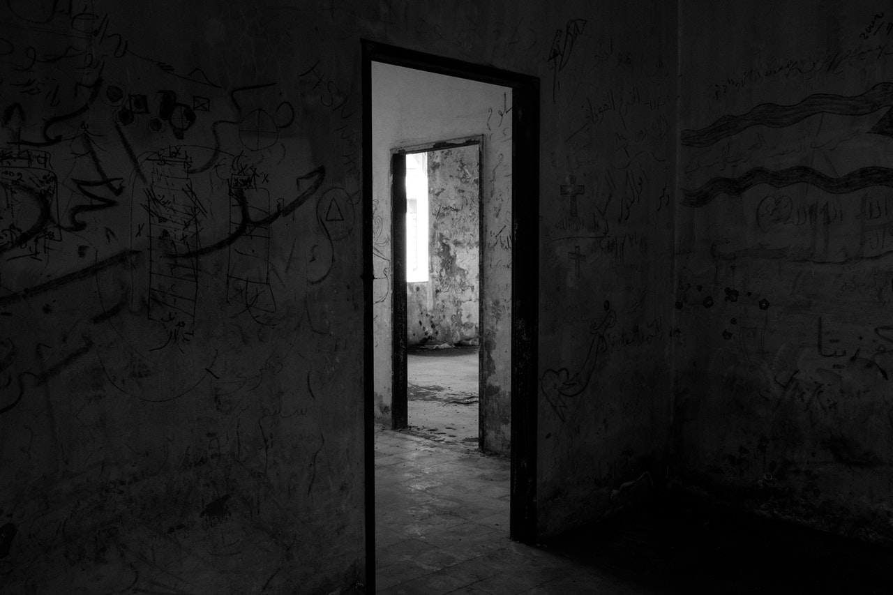

Escoges la puerta marcada por lo que parece ser el rasguño de garras. Un escalofrío aborda tu cuerpo al tomar la manija pero logras armarte de valor para entrar. Cuando te encuentras en el interior de la habitación descubres que se encuentra incluso más tirada que el resto de la casa y que hay más marcas de rasguños en toda la habitación asumes que un lugar tan pequeño algún animal pudo haberse quedado atrapado para calmar tus nervios.
Luego de respirar hondo sigues investigando el lugar y vuelves a escuchar el misterioso ruido descubres que la puerta del cuarto fue cerrada por el aire que entra desde la ventana cuando te acercas a abrirla escuchas que algo está rasgando la puerta.
Puedes...